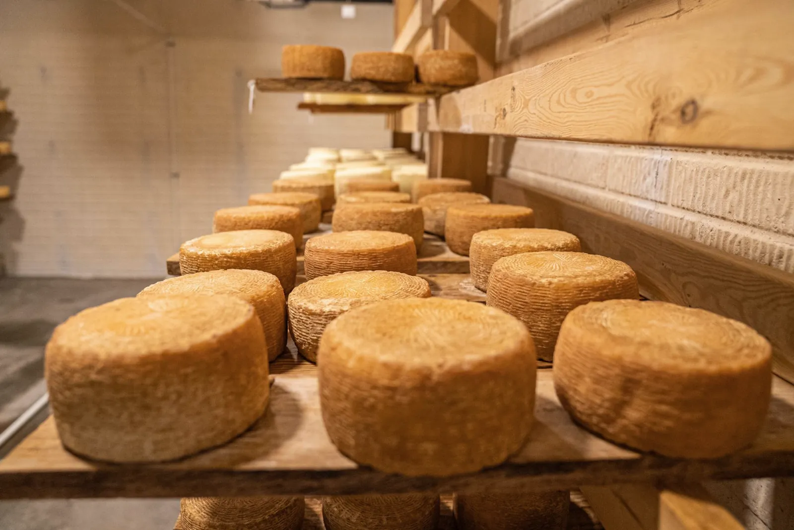
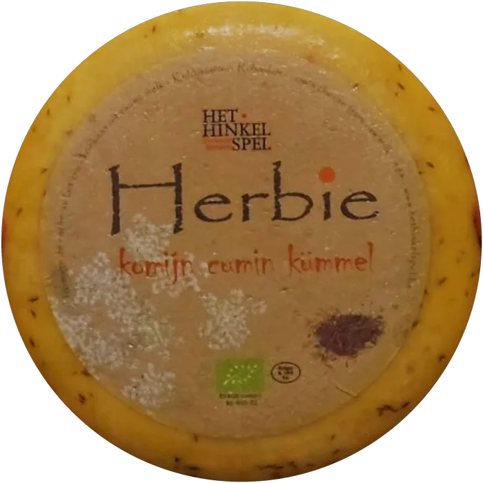
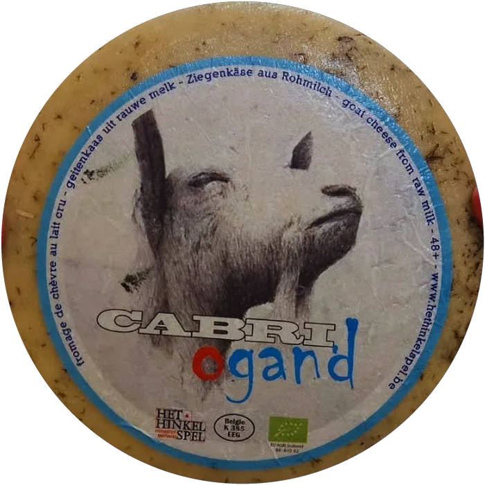
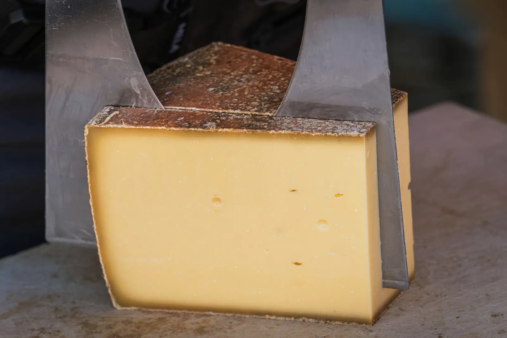

De eerste kazen
Met hulp van andere kaasmakers lukt het: de eerste kazen rijpen in een kaasmakerij in het Gentse begijnhof.
Geen fabriekskaas, wel kazen uit rauwe, biologische melk. In onze kaasmakerij in Sleidinge maken we ze zelf, en in onze winkels in Gent en Sleidinge snijden we ze graag voor je aan.

Begin jaren 80. Drie jonge knapen, Alexander, Jos en Bart, zitten samen rond de tafel. Ze willen iets nieuws doen, iets alternatiefs. Ze willen kaas maken.
Met hulp van andere kaasmakers lukt het: de eerste kazen rijpen in een kaasmakerij in het Gentse begijnhof.
Ze richten de coöperatieve vennootschap Het Hinkelspel op. Samen beslissen, samen maken.
Kaasmakerij en winkel verhuizen naar een groter pand. Kort daarna volgen de eerste proeven met biologische melk.
Vanaf nu maken we alle Hinkelspelkazen van biologische melk. Een echte pionier op dat vlak.
Super Gold voor onze Van Eyck op de World Cheese Awards, en brons voor Pas de Rouge en Pas de Bleu.


Herbie komijn CabriogandOnze bekroonde trots. Officieel de Beste Belgische Kaas van 2026.
Een paterskaas met gewassen korst. De roodbacterie geeft hem zijn kleur en zijn smaak.
Ook gerookt verkrijgbaar: hij gaat bij ons zelf de rookoven in, voor een diepe, rokerige smaak.
Gemaakt zoals Pas de Rouge, maar spannender met knoflook en gemalen roze peper.
Geitenkaas met een gewassen korst. Fijner van textuur en minder vettig.
Raclette, maar dan net dat tikkeltje anders. We combineerden drie dingen die je niet snel samen ziet: Belgisch, rauwmelks én biologisch. Te koop in de winkel, of bestel even zodat je zeker bent van je portie.

Naast onze eigen kazen vind je bij ons een uitgebreid aanbod van collega's uit binnen- en buitenland. Vraag gerust een proevertje.

Onze kazen samen met lekkere producten van collega's:
Ferdinand Lousbergskaai 33. Samen met groenten van De Vroente, brood van Copain en een hapje bij De Bergen.
| Maandag tot zaterdag | 8u30 tot 18u |
| Zondag | Gesloten |
Weststraat 134A. Hier maken we onze kazen, en je koopt ze er vers van de bron.
| Vrijdag | 9u tot 12u 13u tot 18u |
| Zaterdag | 9u tot 13u |
| Zondag tot donderdag | Gesloten |
★★★★★"Heerlijke biologische kazen , vele zelfgemaakt. Ook het eigen gebrouwen Hinkelspelbier is zálig! Verder vind je er brood van biobakkerij ‘De Trog’, zuivel van bioboerderij ‘De zwaluw’, en wellicht nog andere producten die ik nu niet kan bedenken. Zeer vriendelijke bediening ook! Echt een aanrader!"
★★★★★"Geweldige kaasmaker / winkel. Probeer vooral de Pas de Rouge grand cru en de Cabriolait!"
★★★★★"De beste kaas van Gent en omstreke.Proficiat aan de kaasmakers en personeel."
Ik maakte deze demo voor jullie om te tonen wat er kan. Na een kort gesprek maak ik er iets veel persoonlijkers van, helemaal naar jullie wens.
Vrijblijvend. Ik kom langs of we bellen.
Op maat, op jullie eigen domein.
Geen voorschot. Jullie betalen pas als alles klaar is.
Hosting, domeinnaam en kleine wijzigingen, zoals nieuwe openingsuren.
Omdat een voorbeeld meer zegt dan een mail. Zo zien jullie meteen wat er kan, en het kost jullie niets.
Nee. Het gesprek is vrijblijvend. Vinden jullie het niks, dan is het daarmee gedaan.
Na ons gesprek staat jullie site binnen 10 tot 14 dagen online.
Zeker. Jullie domeinnaam kan gewoon blijven, de nieuwe site komt in de plaats van de oude.
Nee, dat doe ik op basis van ons gesprek. Eigen foto's zijn mooi meegenomen, maar niet nodig om te starten.